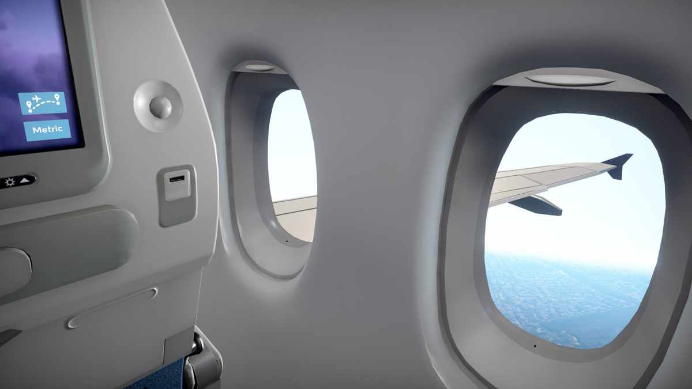
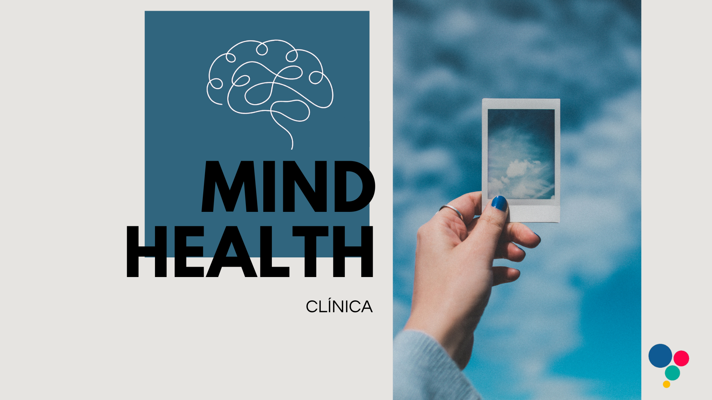
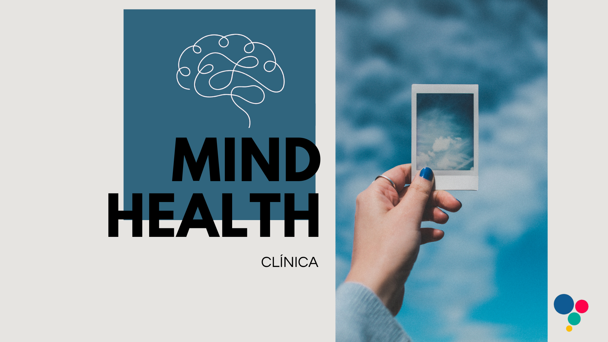

A aeroterapia com realidade virtual (VR) é uma abordagem inovadora que utiliza simulações altamente realistas para ajudar pessoas a enfrentarem o medo de voar. A terapia expõe gradualmente os usuários a diferentes situações de voo, como decolagem, turbulência e pouso, em um ambiente seguro e controlado.
Validação Científica da Aeroterapia
A Terapia de Exposição em Realidade Virtual (VRET) já apresenta eficácia comprovada no tratamento de fobias específicas.
De acordo com o Journal of Anxiety Disorders (2021), aproximadamente 74% dos pacientes apresentam melhora significativa após o tratamento.
Um exemplo prático é a startup espanhola Psious, que aplica essa tecnologia em mais de mil clínicas, com resultados altamente positivos.
A integração de sensores biométricos, como monitoramento da frequência cardíaca e da resposta galvânica da pele, aumenta a precisão terapêutica.
Dispositivos como o headband Muse (com leitura de EEG) já são utilizados como ferramentas de biofeedback durante as sessões.
A Realidade Aumentada (AR) também tem sido aplicada em contextos como simulações de interações sociais e ambientes com grandes multidões.
Pesquisas da Stanford University reforçam a eficácia desse recurso no tratamento de fobias sociais.
Referências e Benchmarking de Mercado
Algumas empresas têm se destacado globalmente no uso da VR para saúde mental, como:
Oxford VR (Reino Unido): Desenvolve soluções digitais para ansiedade e depressão.
Limbix (EUA): Plataforma voltada para adolescentes e jovens adultos com foco em VRET.
Os resultados clínicos são promissores. Estudos apontam redução de até 40% nos ataques de pânico após 4 a 6 sessões de VRET, especialmente em casos de fobia de voo.
Análise de Concorrência e Modelos de Negócio
O mercado de terapias imersivas vem crescendo, com destaque para startups como:
Oxford VR: Especializada em fobias sociais.
XRHealth: Oferece tratamentos com VR reembolsados por planos de saúde nos EUA.
Entre os modelos de negócio mais utilizados estão:
B2B: Licenciamento de plataformas para clínicas (como a Psious, que cobra cerca de €1.000 por mês).
B2C: Assinaturas diretas ao consumidor, como o Healium (US$ 9,99 por semana).
Potenciais Parcerias Estratégicas
Existem diversas oportunidades de integração da Aeroterapia com grandes players:
Companhias Aéreas: Treinamentos e sessões preparatórias para passageiros com medo de voar — empresas como Gol e Azul poderiam ser parceiras.
Planos de Saúde: Inclusão de terapias digitais em pacotes de cobertura, modelo semelhante ao adotado pela Amil.

2. Suporte Comunitário
A conexão com pessoas que compartilham experiências semelhantes é essencial no processo terapêutico.
O suporte comunitário oferece acolhimento, empatia e encorajamento mútuo, tornando o tratamento mais eficaz.
Nossa plataforma proporciona espaços seguros para essa troca, com acompanhamento profissional e mediação emocional.
A construção de uma rede de apoio fortalece a resiliência e contribui para um progresso mais consistente e humano.
3. Pesquisa e Desenvolvimento
Acreditamos que a inovação é essencial para tornar os tratamentos de saúde mental mais eficazes e acessíveis. Nosso setor de P&D investe em estudos clínicos, testes com usuários e parcerias com universidades para validar cientificamente nossas técnicas.
Acompanhamos os avanços em VR, AR, IA e biofeedback para desenvolver terapias personalizadas e baseadas em dados reais, respeitando o perfil de cada paciente. Também monitoramos indicadores fisiológicos, como frequência cardíaca e estresse, para garantir intervenções seguras e adaptativas.
Nosso objetivo é democratizar o acesso à saúde mental com soluções tecnológicas validadas e centradas no ser humano.
Valores
Inovação
Acessibilidade
Humanização
Ciência e Efetividade
Impacto Social
Visão
Ser pioneira na criação de ambientes terapêuticos imersivos que potencializem o autoconhecimento e a transformação pessoal, Construir parcerias globais com profissionais da saúde e tecnologia para impulsionar pesquisas e inovações no cuidado mental, Oferecer experiências terapêuticas seguras, éticas e baseadas em evidências científicas, Inspirar uma nova geração de profissionais a utilizar tecnologia com empatia e propósito.
Missão
Ser referência global em tratamentos inovadores para saúde mental. Ser referência global em tratamentos inovadores para saúde mental, integrando Realidade Virtual, Inteligência Artificial e abordagens terapêuticas modernas, tornando a terapia mais acessível e eficaz para todos.
Quem Somos
Transformando a Saúde Mental com Tecnologia
A MindHealth é uma empresa com o propósito de transformar a maneira como cuidamos da saúde mental por meio da tecnologia, da empatia e do acolhimento.
Nossa história começou em meio a conversas em grupo, onde percebemos um desafio comum — o crescente impacto da saúde mental na vida de jovens e profissionais que lidam diariamente com pressão, sobrecarga e ansiedade.
Diante disso, surgiu uma pergunta que nos guiou desde o início: "E se a tecnologia pudesse tornar o cuidado emocional mais acessível, moderno e eficaz?"
Foi a partir dessa inquietação que nasceu a MindHealth. Reconhecemos que o mundo precisa de soluções que acompanhem as transformações da vida contemporânea e que ofereçam suporte emocional real, eficaz e humano.
Acreditamos que a inovação pode e deve ser usada para democratizar o acesso ao bem-estar, promovendo não só a saúde individual, mas também o impacto positivo em comunidades inteiras.
Mais do que uma empresa, a MindHealth representa um compromisso com o futuro do cuidado emocional — um futuro onde todos tenham as ferramentas necessárias para cuidar da mente com dignidade, acolhimento e esperança.
Diferenciais
Por que escolher a MindHealth?
Terapias com Realidade Virtual
Atendimento 100% online e acessível
Suporte de uma comunidade ativa
Abordagem baseada em evidências científicas
Equipe interdisciplinar qualificada
A Aeroterapia da MindHealth pode ser personalizada para atender diferentes perfis, garantindo segurança, acessibilidade e eficácia.
1. Aeroterapia para Crianças
Objetivo: Transformar o tratamento em uma experiência lúdica e não assustadora.
Gamificação: sistema de recompensas e missões divertidas.
Tempo Reduzido: sessões de 10-15 minutos.
Acompanhamento dos Pais.
Exemplo: Joãozinho, 8 anos, viajou com dinossauros e depois de 5 sessões conseguiu voar de verdade com os pais.
2. Aeroterapia para Idosos
Ambientes calmos e suaves.
Adaptação gradual ao ambiente.
Uso de AR em vez de VR se necessário.
Suporte familiar.
Exemplo: Dona Maria, 70 anos, viajou após 10 anos com apoio da MindHealth.
3. Aeroterapia para Pessoas com Autismo (TEA)
Objetivo: Reduzir sobrecarga sensorial e oferecer previsibilidade.
Controle de Estímulos: Remoção de sons altos, uso de cores suaves e luzes estáveis.
Roteiro Visual: Passo a passo ilustrado antes da simulação.
Acompanhamento Especializado: Terapeuta treinado para guiar a sessão no ritmo do paciente.
Ferramentas de Conforto: Objeto de segurança (ex.: brinquedo ou fone com música).
Exemplo: Lucas, 12 anos (TEA), usou fones com cancelamento de ruído e aprendeu a tolerar o ambiente do aeroporto.
4. Aeroterapia para Ansiedade Generalizada ou Síndrome do Pânico
Objetivo: Evitar gatilhos e garantir progresso sem crises.
Controle Total do Paciente: Botão de pausa para interromper a simulação.
Exposição Gradualíssima: Começar com imagens estáticas antes de VR.
Técnicas de Grounding: Respiração guiada durante a simulação.
Acompanhamento Integrado: Relatórios para o psicólogo/psiquiatra.
Exemplo: Carla, 30 anos, começou com fotos de aviões e, após 8 sessões, conseguiu simular um voo por 20 minutos.
5. Aeroterapia para Deficientes Físicos
Objetivo: Garantir acessibilidade e inclusão.
VR Adaptado: Headset ajustável para cadeirantes e controles acessíveis.
Cenários Personalizados: Inclusão de rampas ou elevadores na simulação.
Acompanhante na Sessão: Auxílio para manuseio do equipamento.
Por Que a Aeroterapia é Revolucionária?
Personalizável: Adapta-se a qualquer perfil (crianças, idosos, TEA, etc.).
Acessível: Pode ser feita com VR profissional ou soluções low-cost (Celular + Cardboard).
Baseada em Evidências: Eficácia comprovada para fobias, ansiedade e TEA.
Depoimentos
O que dizem nossos pacientes
"A MindHealth mudou minha vida. Consegui enfrentar meu medo de voar e agora viajo com tranquilidade!" - Camila M.
"A terapia com VR foi surpreendente. Nunca imaginei que algo tão inovador pudesse me ajudar tanto." - João L.
"A comunidade da plataforma me acolheu desde o início. Me senti compreendida e motivada." - Renata P.
"Eu achava que, com a idade, era normal perder a força, o equilíbrio e a memória. Mas depois que comecei a terapia aqui, minha vida mudou. Voltei a caminhar com segurança, fazer minhas atividades sozinha e, o mais importante, recuperei minha autoestima. Hoje me sinto viva de novo.
" -Dona Lúcia, 74 anos.
"Aqui, nosso filho não é apenas mais um número. Ele é visto, acolhido e respeitado. Essa clínica nos mostrou que o amor, aliado à terapia certa, transforma vidas."
." - Luciana T.
"
Graças à ajuda da MindHealht, posso me orgulhar por ter superado e aprendido a lidar com alguns medos que antes me paralisavam a vida. Aprendi a comemorar, transformar erros em desafios e usar meu raciocínio com plenitude.
" - Heloá, 21 anos
 
